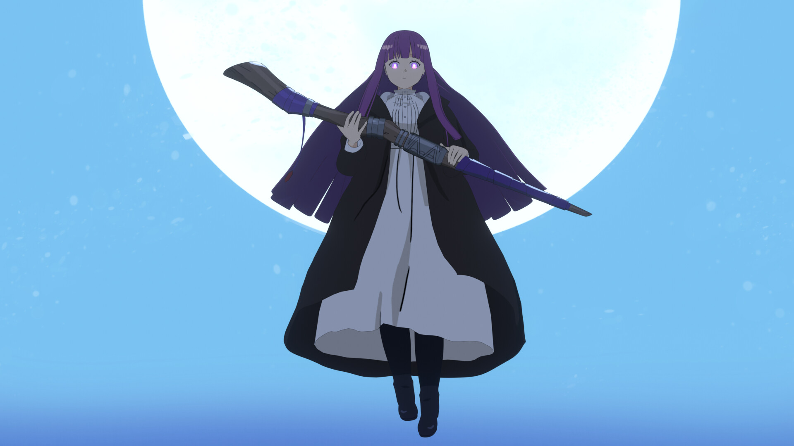

Fern es una maga joven que se convierte en la aprendiz de Frieren. A pesar de su corta edad, demuestra una gran madurez y habilidades mágicas impresionantes, siendo una de las más talentosas de su generación.
Es una persona seria, responsable y meticulosa. A menudo actúa como una figura de equilibrio emocional para el grupo, especialmente frente a la despreocupación o torpeza de Stark o la frialdad de Frieren.
Fern fue adoptada por el sacerdote Heiter, quien la salvó de una situación trágica y la crió como una hija. Gracias a él, se volvió fuerte y determinada, y su deseo de proteger a otros la impulsó a convertirse en una gran maga.
Durante el viaje con Frieren, Fern no solo crece como hechicera, sino también como persona, aprendiendo a valorar los momentos cotidianos y las conexiones con los demás.